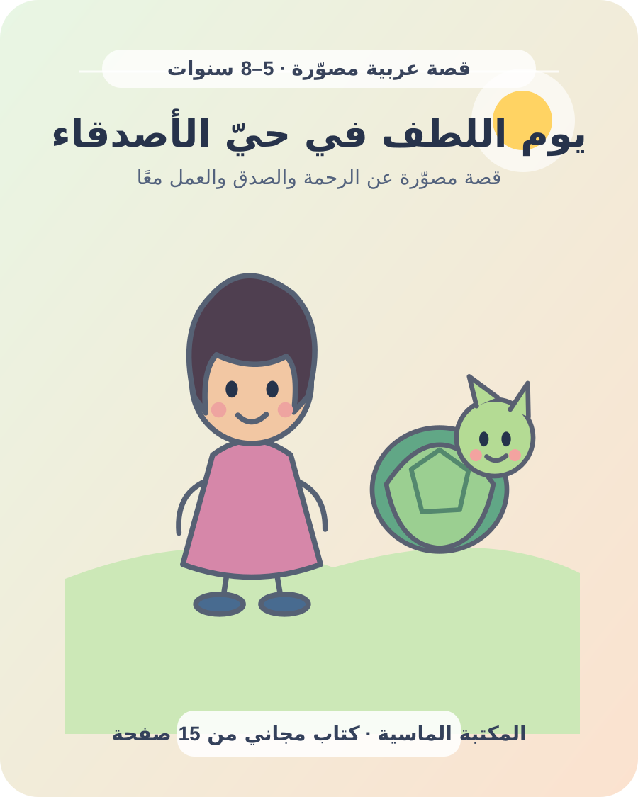

كيف نعلّم الأطفال القيم الحميدة؟ الصدق والرحمة والاحترام
القيم لا تثبت بمحاضرة واحدة؛ يراها الطفل في تعامل الكبار ثم يجربها في الحياة اليومية. عندما يلاحظ أن الأسرة تقول الحقيقة، وتحترم الحدود، وتساعد من يحتاج، تصبح القيمة سلوكًا يمكن ممارسته لا مجرد كلمة في كتاب.

ابدأ بالقيمة التي يراها الطفل
اختر قيمة واحدة واسأل: كيف يشاهدها الطفل في البيت؟ إذا أردنا تعليمه الاحترام، فليلاحظ حديثًا مهذبًا حتى عند الاختلاف. وإذا أردنا الصدق، فليسمعنا نصحح معلومة أو نعترف بخطأ. القدوة لا تعني الكمال؛ الاعتذار الصادق جزء من التعليم.
تجمع التربية الإيجابية بين العلاقة الداعمة والحدود الواضحة والاستماع إلى الطفل. اشرح لماذا تهم القاعدة بعبارة تناسب عمره، واسمح له بطرح الأسئلة واختيار طريقة عملية للتطبيق.
الصدق: اجعل قول الحقيقة آمنًا
عندما يخبرك الطفل أنه كسر غرضًا أو خالف اتفاقًا، خذ لحظة قبل الرد. ابدأ بـ«شكرًا لأنك أخبرتني»، ثم تحدث عن الأثر وحدد الإصلاح الممكن. إذا كان الرد الأول صراخًا أو عقوبة شديدة فقد ينشغل الطفل بإخفاء الخطأ بدل التعلم منه.
افصل بين الفعل وهوية الطفل: «قلت معلومة غير صحيحة» أفضل من «أنت كاذب». اسأل عمّا جعله مترددًا من دون استجواب، ووضح أن قول الحقيقة لا يلغي المسؤولية؛ بل يساعد الأسرة على حل المشكلة.
الرحمة: استمع قبل تقديم الحل
إذا رأيت طفلًا متضايقًا، صف ما لاحظته بلطف: «أرى أن صديقك ابتعد؛ هل تريد أن تخبرني ما حدث؟». لا تفترض شعوره ولا تتكلم نيابة عنه. بعد أن ينتهي، اسأل: «ما الذي قد يساعد؟» أو «ما الخيار اللطيف والآمن؟».
توضح موارد مركز هارفارد لنمو الطفل أهمية التفاعل المتبادل: يرسل الطفل إشارة أو فكرة، فيستجيب البالغ وينتظر رد الطفل التالي. طبق ذلك في حديث قصير أو لعبة أو قراءة قصة، لا كمحاضرة. دليل التفاعل المتبادل.
الاحترام يعني الاستماع والحدود
علّم الطفل انتظار المتحدث، وطلب الإذن قبل أخذ أغراض الآخرين، واستخدام كلمات لا تهين. وفي الوقت نفسه احترم حدوده: لا تجبره على عناق أو مشاركة غرض شخصي، بل علمه التحية المناسبة وعبارة «لا أريد الآن» بأدب. احترام الكبير لا يعني تجاهل الشعور أو قبول تصرف غير آمن.
تدربوا على عبارات: «هل تسمح لي؟»، «هل أستخدمه بعدك؟»، «لم يعجبني هذا، أرجو أن تتوقف». عندما يستخدمها الطفل، استمع إليه حتى النهاية.
المسؤولية والعطاء بمقدار مناسب
ابدأ بمهمة صغيرة ذات معنى: إعادة كتاب إلى الرف، وضع الملابس في السلة، أو ترتيب المائدة مع بالغ. وضح المطلوب ودرب الطفل عليه ثم اذكر أثر مساهمته: «ترتيب الأكواب ساعد الجميع».
يمكن للعطاء أن يكون بطاقة شكر أو ترتيب مساحة مشتركة أو سؤال أحد أفراد الأسرة عن حاجته. لا تحمل الطفل مسؤولية راحة الكبار أو رعاية طفل أصغر وحده؛ تظل مسؤولية الإشراف على البالغين.
القصص واللعب لتجربة المواقف
القصة تتيح للطفل التفكير في موقف آمن قبل مواجهته. بعد القراءة اسأل سؤالًا مفتوحًا: «ماذا تتوقع أن تفعل الشخصية؟» واقبل أكثر من إجابة آمنة. مثلوا مشهدًا قصيرًا ينتظر فيه كل منكما دوره، ثم تبادلا الأدوار.
لا تحولوا كل قصة إلى امتحان؛ يكفي سؤال أو اثنان، ثم اتركوا الطفل يختار مشهدًا يرسمه أو يغير نهايته. جربوا سلمى وفانوس الكلمات الطيبة أو يوم اللطف في حيّ الأصدقاء مجانًا.
طقس عائلي: قيمة الأسبوع
اجتمعوا عشر دقائق في وقت مناسب. اختاروا قيمة للأسبوع وفعلًا يمكن ملاحظته، ثم اتفقوا على تجربة صغيرة. لا تقارنوا الأطفال؛ احتفلوا بالمحاولة وناقشوا ما تعلمتموه.
| القيمة | الفعل | سؤال للحوار |
|---|---|---|
| الصدق | أخبر بما حدث حتى إن أخطأت. | ما الذي يجعل قول الحقيقة أسهل؟ |
| الرحمة | اسأل صديقًا إن كان يريد مساعدة. | كيف عرفت ما يحتاجه؟ |
| الاحترام | استمع حتى ينتهي المتحدث. | كيف أظهرت أنك تسمع؟ |
| المسؤولية | أعد غرضًا واحدًا إلى مكانه. | من استفاد من هذه الخطوة؟ |
ابتعد عن العار والمقارنة والإجبار
السخرية أو وصف الطفل بأنه «أناني» قد تغطي على فرصة شرح الفعل المطلوب. لا تجبره على ترديد اعتذار من دون فهم؛ ساعده على ملاحظة الأثر واختيار طريقة إصلاح مناسبة. تجنب ربط الأخلاق بنوع الطفل أو مقارنته بإخوته؛ الاهتمامات والسرعة وطرق التعبير تختلف.
إذا لم تنجح خطوة، عدلها بما يراعي شخصية الطفل وثقافة الأسرة. وإذا ظهر خوف مستمر أو أذى، فالأولوية للسلامة وطلب مساعدة بالغ موثوق أو مختص.
أسئلة شائعة
ما أول قيمة أبدأ بها؟
ابدأ بقيمة تحتاجها الأسرة في موقف متكرر مثل الصدق أو احترام الدور، وحولها إلى فعل واضح.
هل أطلب من طفلي مشاركة كل ألعابه؟
علمه المشاركة بالتدريج، مع احترام حقه في بعض الأغراض الشخصية ووضع دور واضح للألعاب المشتركة.
كيف أتعامل مع الاعتذار؟
ساعد الطفل على فهم أثر الفعل واختيار إصلاح مناسب بدل الاكتفاء بإجباره على كلمة.
اقرأ قصة مصوّرة مجانية للأطفال ← · اكتشف كتب المكتبة ← · عودة إلى مقالات الأسرة